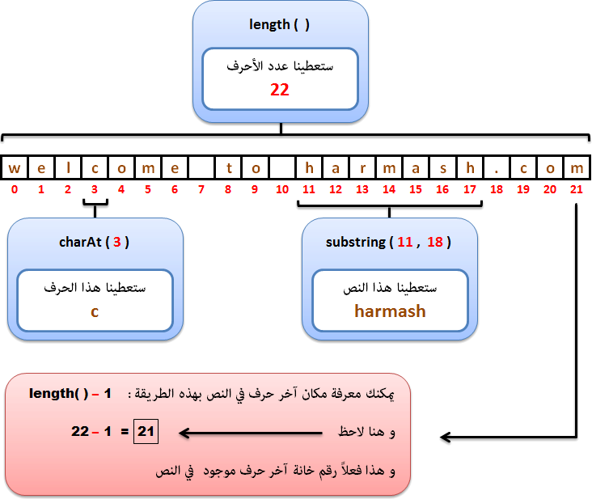

Javaالتعامل مع النصوص في جافا
مفهوم النصوص
نص: تعني String في جافا, و الـ String عبارة عن مجموعة من الأحرف.
النوع String عبارة عن كلاس و لاحظ أنه يبدأ بحرف كبير مثل إسم أي كلاس في جافا.
إذاً عندما نقوم بتعريف String فنحن فعلياً نقوم بتعريف كائن, و لكننا نقول له متغير لأنه بشكل عام يسمح لنا بتخزين أي قيمة بداخله و لكنه في الأساس كائن نوعه String و ليس متغير عادي.
طريقة تعريف String
أبسط طريقة و الأكثر إستخداماً هي تعريفه مثل متغير عادي.
مثال
String greeting = "Hello world!";
تذكر أنك حتى لو قمت بتعريفه مثل متغير عادي, سيعتبره المترجم كائن.
و مثل أي كائن, تستطيع إنشاء كائن نوعه String من خلال الكلمة new و من خلال الكونستركتور, و ستفهم معنى هاتين الكلمتين في دروس لاحقة.
الكلاس String يحتوي على 13 كونستركتور يمكنك استخدامهم لوضع قيمة أولية في النص من خلال عدة مصادر, مثل من مصفوفة أحرف.
مثال
Main.java
public class Main {
public static void main(String[] args) {
// هنا قمنا بتعريف مصفوفة من الأحرف
char[] helloArray = { 'h', 'e', 'l', 'l', 'o' };
// من خلال الكونستركتور helloString هنا وضعنا محتوى مصفوفة الأحرف كنص للكائن
String helloString = new String(helloArray);
// helloString هنا قمنا بعرض قيمة الكائن
System.out.println( helloString );
}
}
•سنحصل على النتيجة التالية عند التشغيل.
hello
مفهوم الـ Concatenation
Concatenation تعني إضافة محتوى نص على نص, أي كأنك تنسخ نص و تلصقه في نهاية نص آخر.
يمكنك تطبيق الـ Concatenation في جافا بطريقتين:
مثال
•سنقوم بتعريف نصين و نعطيهم قيم, ثم سنعرف نص ثالث و نضع النصين السابقين فيه.
Main.java
public class Main {
public static void main(String[] args) {
String s1 = "welcome to "; // هنا قمنا بتعريف النص الأول
String s2 = "harmash.com"; // هنا قمنا بتعريف النص الثاني
String s3 = s1 + s2; // أضفنا قيمة النصين السابقين في النص الثالث
System.out.println( s3 ); // هنا عرضنا قيمة النص الثالث لنتأكد إذا تمت عملية الإضافة كما نريد
}
}
•سنحصل على النتيجة التالية عند التشغيل.
welcome to harmash.com
مصطلحات مهمة عليك معرفة معناها
لنفترض أننا قمنا بتعريف String إسمه welcome و أعطيناه قيمة.
مثال
String welcome = "welcome to harmash.com";
سيتم تخزين محتوى النص في الذاكرة حرفاً حرفاً و بالترتيب و يبدأ بترقيمهم من الرقم 0 كما في هذه الصورة.

مصطلحات تقنية
أنت كمبرمج يمكنك إستغلال أرقام الخانات لتصل لمحتوى النص و تفعل به ما تشاء.
هناك دوال كثيرة جاهزة في جافا للتعامل مع النصوص, عليك فقط فهم طريقة عملها و استخدامها.
مثال

دوال الكلاس String
الكلاس String هو كلاس جاهز في جافا, يحتوي على دوال كثيرة للتعامل مع محتوى النصوص, سواء للبحث عن أحرف أو كلمات أو جمل, تجزيء النص, تغيير الـ Case للأحرف, دمج النصوص إلخ..
سنقسم دوال الكلاس String إلى 5 فئات أساسية كما في الجدول التالي:
دوال للبحث (Searching).
دوال للتجزيء (Substring).
دوال للتبديل (Replacing).
دوال للمقارنة (Comparison).
دوال للمعالجة (Manipulation).
ملاحظة
الكلاس String يعتبر Immutable class و هذا يعني أنك عندما تستدعي أي دالة على String, لن تعدل محتوى الـ String الذي قام باستدعائها, بل سترجع لك نسخة معدلة من هذا الـ String و سيبقى الـ String الأصلي كما هو.
دوال البحث الموجودة في الكلاس String
| إسم الدالة مع تعريفها |
public char charAt(int index)
ترجع الحرف الموجود على الـ index الذي نمرره لها مكان الباراميتر index في الـ String الذي قام بإستدعائها.
شاهد المثال » |
public int indexOf(String str)
تبحث في الـ String الذي قام بإستدعائها عن أول index يوجد إبتداءاَ من عنده نفس النص الذي نمرره لها مكان الباراميتر str و ترجعه.
شاهد المثال » |
public int lastIndexOf(String str)
تبحث في الـ String الذي قام بإستدعائها عن آخر index يوجد إبتداءاَ من عنده نفس النص الذي نمرره لها مكان الباراميتر str و ترجعه.
شاهد المثال » |
public boolean contains(CharSequence cs)
ترجع true في حال كان الـ String الذي قام بإستدعائها يحتوي على نفس قيمة النص الذي نمرره لها مكان الباراميتر cs ككائن من الكلاس CharSequence.
غير ذلك ترجع false.
شاهد المثال » |
دوال التجزيء الموجودة في الكلاس String
| إسم الدالة مع تعريفها |
public String substring(int startIndex, int endIndex)
ترجع String عبارة عن جزء (substring) من الـ String الذي قام باستدعائها.
شاهد المثال » |
public CharSequence subSequence(int startIndex, int endIndex)
ترجع كائن من الكلاس CharSequence عبارة عن جزء (substring) من الـ String الذي قام باستدعائها.
شاهد المثال » |
public String[] split(String regex)
ترجع نسخة من الـ String الذي قام باستدعائها مقسمة على شكل مصفوفة نوعها String.
مكان الباراميتر regex نمرر نص يحدد الطريقة التي سيتم على أساسها تقسيم الـ String و وضع كل قسم فيها في عنصر بداخل المصفوفة.
شاهد المثال » |
دوال التبديل الموجودة في الكلاس String
| إسم الدالة مع تعريفها |
public String replace(char oldSequence, char newSequence)
عند استدعائها نمرر لها قيمتين عبارة عن char أو CharSequence.
تبحث في الـ String الذي قام باستدعائها عن القيمة الأولى التي نمررها لها و تبدلها بالقيمة الثانية التي نمررها لها.
شاهد المثال » |
public String replaceAll(String regex, String replacement)
تستخدم للبحث في الـ String الذي قام باستدعائها عن Substring ما لتبديله بنص جديد.
مكان الباراميتر regex نمرر نص يمثل النص الذي نريد استبداله.
و مكان الباراميتر replacement نمرر النص الذي سيحل مكانه.
إذاً هنا كلما تم إيجاد نفس قيمة الباراميتر regex سيتم إستبدالها بقيمة الباراميتر replacement.
شاهد المثال » |
public String replaceFirst(String regex, String replacement)
تستخدم لتبديل نص محدد بداخل الـ String الذي قام باستدعائها.
مكان الباراميتر regex نمرر نص يمثل النص الذي نريد استبداله.
و مكان الباراميتر replacement نمرر النص الذي سيحل مكانه.
إذاً هنا عند إيجاد نفس قيمة الباراميتر regex سيتم إستبدالها بقيمة الباراميتر replacement.
شاهد المثال » |
دوال المقارنة الموجودة في الكلاس String
| إسم الدالة مع تعريفها |
public boolean startsWith(String prefix)
تستخدم لمعرفة ما إذا كان الـ String الذي قام باستدعائها يبدأ بنص معين أم لا.
إذا كانت قيمة الباراميتر prefix موجودة في بدايته ترجع true, غير ذلك ترجع false.
شاهد المثال » |
public boolean endsWith(String suffix)
تستخدم لمعرفة ما إذا كان الـ String الذي قام باستدعائها ينتهي بنص معين أم لا.
إذا كانت قيمة الباراميتر prefix موجودة في نهايته ترجع true, غير ذلك ترجع false.
شاهد المثال » |
public boolean equals(Object anObject)
تقارن قيمة الـ String الذي قام باستدعائها مع قيمة أي كائن نمرره لها مكان الباراميتر anObject.
ترجع true في حال كانت جميع أحرفهم متطابقة, غير ذلك ترجع false.
شاهد المثال » |
public boolean equalsIgnoreCase(String str)
تقارن قيمة الـ String الذي قام باستدعائها مع قيمة الـ String الذي نمرره لها مكان الباراميتر str.
ترجع true في حال كانت جميع أحرفهم متطابقة و لا يهمها إذا كانت الأحرف كبير أو صغيرة, غير ذلك ترجع false.
شاهد المثال » |
public boolean contentEquals(StringBuffer sb)
تقارن قيمة الـ String الذي قام باستدعائها مع قيمة كائن الـ StringBuffer الذي نمرره لها مكان الباراميتر sb.
ترجع true في حال كانت جميع أحرفهم متطابقة, غير ذلك ترجع false.
شاهد المثال » |
public int compareTo(String anotherString)
تقارن قيمة الـ String الذي قام باستدعائها مع قيمة الـ String الذي نمرره لها مكان الباراميتر anotherString.
ترجع 0 في حال كانت جميع أحرفهم متساوية. و ترجع قيمة أكبر أو أصغر من 0 تمثل الفارق بين كود الـ ASCII الخاص بأول حرف مختلف تم إيجاده بينهما.
شاهد المثال » |
public int compareToIgnoreCase(String anotherString)
تقارن قيمة الـ String الذي قام باستدعائها مع قيمة الـ String الذي نمرره لها مكان الباراميتر anotherString و لا يهمها إذا كانت الأحرف كبير أو صغيرة.
ترجع 0 في حال كانت جميع أحرفهم متساوية. و ترجع قيمة أكبر أو أصغر من 0 تمثل الفارق بين كود الـ ASCII الخاص بأول حرف مختلف تم إيجاده بينهما.
شاهد المثال » |
public boolean matches(String regex)
تقارن قيمة الـ String الذي قام باستدعائها مع التعبير النمطي الذي نمرره لها مكان الباراميتر regex.
ترجع true في حال كانت جميع أحرفهم متطابقة, غير ذلك ترجع false.
شاهد المثال » |
public boolean regionMatches(boolean ignoreCase, int toffset, String other, int ooffset, int len)
تقارن جزء محدد في الـ String الذي قام باستدعائها مع جزء محدد في الـ String الذي نمرره لها مكان الباراميتر other.
ترجع true في حال كانت جميع أحرفهم متطابقة, غير ذلك ترجع false.
شاهد المثال » |
دوال المعالجة الموجودة في الكلاس String
| إسم الدالة مع تعريفها |
public String concat(String s)
ترجع نسخة من الـ String الذي قام باستدعائها مضافاً عليه قيمة الـ String الذي نمرره لها مكان الباراميتر s.
شاهد المثال » |
public static String copyValueOf(char[] data)
ترجع نسحة من مصفوفة الأحرف التي نمررها لها مكان الباراميتر data كـ String.
شاهد المثال » |
public void getChars(int srcBegin, int srcEnd, char[] dst, int dstBegin)
تنسخ أحرف الـ String الذي قام باستدعائها بداخل مصفوفة الأحرف التي نمررها لها مكان الباراميتر dst مع تحديد النطاق الذي نريد نسخه و المكان الذي نريد وضع الأحرف فيه.
شاهد المثال » |
public int hashCode()
ترجع قيمة الـ hash code للـ String الذي قام باستدعائها.
شاهد المثال » |
public String intern()
تمنع وجود أكثر من String يحتوى على نفس المحتوى, لذلك هي مهمة جداً من أجل التخزين. فهي تسرع عمل المعالج و تحفظ مساحات الذاكرة.
شاهد المثال » |
public int length()
ترجع رقم يمثل عدد أحرف الـ String الذي قام باستدعائها.
شاهد المثال » |
public char[] toCharArray()
ترجع أحرف الـ String الذي قام باستدعائها كمصفوفة نوعها char.
شاهد المثال » |
public String toLowerCase()
ترجع نسخة من الـ String الذي قام باستدعائها كل أحرفها صغيرة.
شاهد المثال » |
public String toUpperCase()
ترجع نسخة من الـ String الذي قام باستدعائها كل أحرفها كبيرة.
شاهد المثال » |
public String trim()
ترجع نسخة من الـ String الذي قام باستدعائها لا تحتوي على مسافات فارغة في بدايتها و نهايتها.
شاهد المثال » |
public String valueOf(Object anObject)
ترجع أي قيمة نمررها لها مكان الباراميتر anObject كـ String.
شاهد المثال » |
إرشادات مهمة لمعالجة الأخطاء
في حال وضعت رقم index غير موجود سيظهر لك الخطأ التالي
java.lang.StringIndexOutOfBoundsException: String index out of range
هذا الخطأ يعني أنك طلبت إرجاع قيمة خانة في الـ String غير موجودة, أو أنك حاولت تبديل قيمة خانة في الـ Stringهي في الأساس غير موجودة.
في الحالتين هذا يعني أنك خرجت عن مساحة الـ String المحجوزة في الذاكرة.
إذاً في حال ظهر لك هذا الخطأ إعرف أنك إستخدمت رقم index أكبر من أرقام الـ index الموجودين في الـ String, أو قد يكون رقم أصغر من صفر.
مثال
Main.java
public class Main {
public static void main(String[] args) {
String s = "java is amazing";
System.out.println( s.charAt(30) );
}
}
•سنحصل على النتيجة التالية عند التشغيل.
Exception in thread "main" java.lang.StringIndexOutOfBoundsException: String index out of range: 30
•هذا يعني أنك طلبت إرجاع قيمة خانة في الـ String غير موجودة, و أظهر لنا أن الخانة رقم 30 تحديداً غير موجودة.


 محرر الويب
محرر الويب نظام الألوان
نظام الألوان محول الوحدات
محول الوحدات محلل عناوين الشبكات
محلل عناوين الشبكات